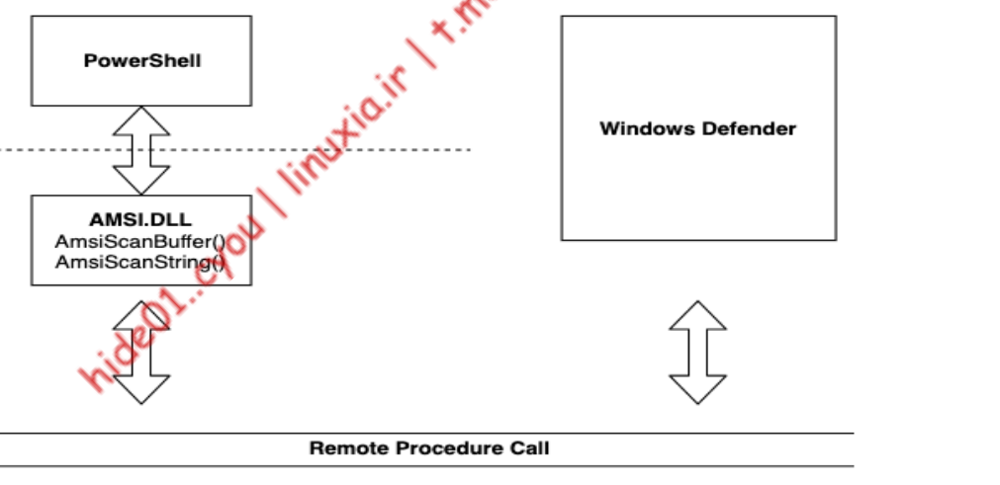

AMSI (theory)
- To protect against malicious PowerShell scripts, Microsoft introduced the Antimalware Scan Interface to allow run-time inspection of all PowerShell commands or scripts. At a high level, AMSI captures every PowerShell, Jscript, VBScript, VBA, or .NET command or script at run-time and passes it to the local antivirus software for inspection.
- only 11 vendors today support amsi
- How it works

- AMSI.dll is injected onto every powershell process
- info gathered by the api is capture via RPC to AV (e.g defender)
- Windows Defender scans the buffer passed to AmsiScanBuffer and returns the result value. This value is defined according to the AMSI_RESULT361 enum. A return value of “32768” indicates the presence of malware, and “1” indicates a clean scan